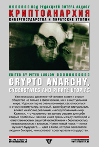

Питер Ладлоу (сост.) • Криптоанархия, кибергосударства и пиратские утопии • cybertime • 06.08.2005

В начале своего появления Сеть казалась новым и, может быть, последним островом свободы, окруженным со всех сторон зарегулированной цивилизацией. Впрочем, эту свободы и сами «жители» Сети понимали по-разному. Одно дело — свобода ничем не ограниченного рынка, другое — свобода для организации новых социальных отношений. Поэтому — рано или поздно — должен был возникнуть проблема ограничения этой свободы и регулировании сетевых отношений. Какими законами могут регулироваться отношения в Сети между пользователями, провайдерами доступа и государством? Как могут возникать такие законы? Каковы пределы свободы в Сети? Может ли она вообще быть чем-то ограничена? Не является ли Сеть новой Землей обетованной для анархических утопий? Сборник статей под редакцией известного специалиста по сетевому праву, Питера Ладлоу, посвящен проблеме регулирования социальных отношений, возникающих в Сети как новой сфере жизни современной цивилизации.
ПРЕССА И КОНТЕКСТ
Криптоанархия, кибергосударства и пиратские утопии (Вебпланета, 17.11.2005)
В начале своего появления Сеть казалась новым и, может быть, последним островом свободы, окруженным со всех сторон зарегулированной цивилизацией. Впрочем, эту свободы и сами «жители» Сети понимали по-разному. Одно дело — свобода ничем не ограниченного рынка, другое — свобода для организации новых социальных отношений. Поэтому — рано или поздно — должна была возникнуть проблема ограничения этой свободы и регулировании сетевых отношений.
Какими законами могут регулироваться отношения в Сети между пользователями, провайдерами доступа и государством? Как могут возникать такие законы? Каковы пределы свободы в Сети? Не является ли Сеть новой Землей обетованной для анархических утопий? Сборник статей под редакцией известного специалиста по сетевому праву, Питера Ладлоу, посвящен проблеме регулирования социальных отношений, возникающих в Сети как новой сфере жизни современной цивилизации.
Сборник «Криптоанархия, кибергосударства и пиратские утопии» составлен в 1999 г. и насквозь проникнут духом настоящего киберпанка. Хотя большинство статей, которые входят в книгу, свободно доступны в Сети (например, знаменитая «Декларация независимости киберпространства» Джона Барлоу) и написаны еще в прошлом тысячелетии, однако для настоящих ценителей это вечные ценности.
К сожалению, нам повседневно приходится сталкиваться с людьми, для которых интернет — всего лишь коммерческий инструмент. Они до сих пор не понимают всего потенциала Всемирной сети, не могут смотреть в будущее. Для них статьи из киберпанковского сборника станут настоящим откровением.
Книга состоит из пяти разделов. Первый посвящен Декларации независимости киберпространства. Во втором обсуждается понятие криптоанархии как следствие повсеместного распространения и использования мощных криптографических инструментов, таких как PGP. Очевидно, что в условиях полной анонимности граждане станет «невидимыми» для государства, и национальные границы стран просто потеряют свой смысл. Другие части сборника «Криптоанархия, кибергосударства и пиратские утопии» посвящены электронной коммерции, онлайновым сообществам, а также утопичным и анти-утопичным взглядам на киберпространство. Опять же, все эти статьи можно воспринимать только сквозь призму почти десяти лет, прошедших с момента их написания.
Сейчас Питер Ладлоу известен как активный участник многопользовательских онлайновых игр Second Life и The Sims Online, где он выступает в роли онлайнового журналиста, критикуя местные коррумпированные правительства и самих «богов» — разработчиков игры. Создатели игры The Sims даже подвергли его виртуальным репрессиям из-за этого. В данный момент Ладлоу готовит к печати книгу о своих виртуальных похождениях под названием «Всего лишь игра: онлайновые миры и виртуальный журналист, который знал слишком много» («Only a Game: Online Worlds and the Virtual Journalist Who Knew Too Much») — она выйдет в апреле 2006 г.
Кладбище ссылок (Валерий Золотухин, polit.ru, 13.12.2005)
“Криптоанархия: кибергосударства и пиратские утопии” – сборник статей, посвященный спорам вокруг юридических аспектов существования Интернета, – был выпущен издательством Массачусетского технологического университета в 2001 году. Прошло всего-то пять лет, книга вышла на русском языке в издательстве “Ультра.Культура” и превратилась в наглядное свидетельство того, как быстро устаревают споры относительно будущего Сети.
Тексты, объединенные в несколько разделов, охватывают действительно широкий спектр вопросов – от криптографии (шифрования любого рода информации, передаваемой от одного пользователя к другому), которая рассматривается авторами как способ создания теневого виртуального рынка, через споры о законотворчестве в киберпространстве, к первым свидетельствам формирования законов и правил для пользователей Интернета и участников разных сетевых сообществ. Последний и самый, пожалуй, любопытный раздел книги – “Утопия, дистопия и пиратские утопии” – подводит логическую черту под бесконечной чредой прогнозов относительно цифрового будущего и посвящен критике концепций авторов американского журнала Wired, ставшего в середине 90-х в главным рупором нового “виртуального класса”.
Cобранные в книге статьи написаны, в основном, в период с 1995 по 1998 гг., то есть чуть меньше десяти лет назад. Именно это позволяет оценить, вместе с фантастическими изменениями, которые произошли за это время с Интернетом, степень заблуждения теоретиков сети середины 90-х годов. Прошедшее десятилетие камня на камне не оставило от большинства ожиданий и надежд, выраженных авторами “Криптоанархии”. Вот лишь несколько примеров.
В “Манифесте криптоанархиста” классик-киберпанк Тимоти Мэй делает предсказание: “Два человека смогут обмениваться сообщениями, заниматься бизнесом, заключать электронные контракты, не имея возможности установить Подлинные Имена, личности друг друга”. В 1992 году, когда Мэй написал этот манифест, многие заблуждались, полагая, что возможности шифрования передаваемой через Интернет информации рано или поздно приведут к созданию феноменального неподконтрольного рынка, важнейшим условием функционирования которого станет репутация участников сделки. Однако же, не привели. Зато за развенчание утопических взглядов Мэя берется писатель-фантаст Дэвид Брин и, вполне справившись с задачей, неожиданно сам начинает фантазировать о будущем Сети. В результате, одним из выводов статьи становится утверждение, что в эпоху Интернета внезапный вооруженный конфликт и войны, по его мнению, окажутся невозможны: “Если все страны “запутаются” в Сети, то это позволит значительно понизить уровень опасности. […] Совершенно ясно, что полностью и свободно подключенное к Сети общество достигнет такой степени прозрачности, что внезапная, импульсивная агрессия станет значительно менее привлекательной и столь же значительно возрастет ответственность за нее”. Едва ли Бирн решился бы дословно повторить свою мысль спустя всего лишь четыре года после написания своей статьи, в 2001 году. Но характерна здесь сама ситуация: взявшись за развенчание одной утопии, авторы на каждом шагу предлагают собственные невероятные сценарии развития Сети, образуя замкнутый круг. Более того, одна невероятная теория подстегивает другую.
Этот замкнутый круг вбирает в себя не только попытки смоделировать новые модели рынка, но и целые социально-политические и правовые системы. В “Криптоанархии” подробно изложена история сетевого сообщества LambdaMOO, участники которого, общаясь в реальном времени, рискнули пойти на социальный эксперимент – попробовать создать собственный арбитражный орган, расследующий претензии одних виртуальных участников к другим. И создали-таки, на основании чего автор прогнозирует: “Очень вероятно, что в дальнейшем виртуальные пространства, подобные LambdaMOO, смогут стать лабораториями для проведения экспериментов с различными институциональными разработками и правовыми стандартами”. И тут же оговаривается, что эксперименты с правом пока что не увенчались успехом: “Организации [существующие в LambdaMOO – В.З.] кажутся нам весьма знакомыми”, а судя по описаниям, один в один дублируют существующие в реальном мире. Курьезности всему этому добавляет то обстоятельство, что в настоящий момент редактор “Криптоанархии” Питер Ладлоу готовит к публикации книгу, целиком посвященную несправедливостям модераторов-”диктаторов” Богом забытых виртуальных сообществ. Думается, что издать такое сочинение будет не по зубам даже маргинальной “Ультра.Культуре”.
Статья “Распад битов” критика и культуролога Марка Дери, в которой жесткой критике подвергнуты идеи легендарного колумниста Wired и основателя MIT Media Lab Николаса Негропонте, – пожалуй, самый изящный щелчок по носу утопистам, связавшим слишком большие надежды с цифровой революцией 90-х. Чтобы понять масштабы, в которых мыслит (реже – действует) Негропонте – достаточно привести один пример: совсем недавно он объявил о начале совместной с ООН реализации программы “Laptop per child” (“Ноутбук для каждого ребенка”), глобальной акции по оснащению всех детей планеты дешевыми ноутбуками за $100. Так вот, в статье Дери речь идет о футуристических пейзажах, появлявшихся в течение нескольких лет на последней странице Wired и созданных главным “кибернетическим рекламщиком” своей эпохи: “Странно, но описанные Негропонте технические фишки вроде самостирающихся рубашек, передающих галстуков и автомобилей с полностью автоматизированным управлением всегда заметно отдавали старомодностью. […] Так, к примеру, его “умное окружение”, с говорящими тостерами и цифровой прислугой, похоже на Димаксион-хаус Бакминстера Фуллера образца 1927 года, укомплектованный автоматической машинкой для стрижки волос, вакуумной зубной щеткой и самовыключающейся стиральной машинкой, выдающей чистую и сухую одежду через три минуты после загрузки. […] Они и мир, в котором они существуют, – это воспоминание о минувшем будущем. Это вымирающая технократия времен Всемирной выставки 1939 года или диснеевская страна Завтрашнего Дня—социально режиссированные утопии, вероятно, подсмотренные мечтательной элитой”.
“Воспоминание о минувшем будущем” – очень точное определение не только для предпосылок тех утопий, что нашли отражение в сборнике, но и в целом читательского впечатления от книги. Именно такой подзаголовок следовало бы дать русскому изданию “Криптоанархии” – книге с “мертвыми” ссылками в примечаниях.
http://www.polit.ru/culture/2005/12/13/cryptoanarchy.html
Слово и дело (Киви Берд, “Компьютерра”, №16 от 27.04.2006)
В ноябре 2005 года английский журнал Prospect Magazine опубликовал список ста наиболее влиятельных в мире интеллектуалов. Рейтинг этот был составлен на основании опроса 20 тысяч читателей журнала в разных странах планеты, и хотя он, конечно, не отражает мнение “всего прогрессивного человечества”, однако все равно интересен – хотя бы масштабностью мероприятия. А также, разумеется, взглядами и идеями личностей, оказавшихся в верхних строчках списка. Первое место в “Top 100 интеллектуалов” занял человек по имени Ноам Хомский (Noam Chomsky), знаменитый американский ученый-лингвист и один из виднейших критиков международной политики США.
Гораздо меньше известно, что Хомский с ранней молодости и по сию пору (в 2008 году ему исполнится восемьдесят лет) продолжает оставаться убежденным анархистом, старающимся донести до людей истинный смысл идей этого общественно-политического течения. Любое государство – от “империалистических” США до “большевистского” СССР – всегда усматривало в анархизме смертельную угрозу и прикладывало массу усилий для его опорочивания, дабы слово “анархист” ассоциировалось у народа с беспорядками, бомбами, терактами и всеобщим хаосом, а самым ходовым определением анархизма было бы, скажем, такое, цитируемое по прошлогоднему изданию “Энциклопедии криминологии”: “Любое действие, использующее насильственные меры для разрушения организации общества”.
На самом деле все, конечно же, обстоит иначе, поскольку большинство анархистов используют слово “анархия” для обозначения совсем иных вещей. Анархисты выступают за общественные отношения, построенные на основе добровольного объединения свободных личностей в автономные сообщества, действующие на основе взаимопомощи и самоуправления. Можно сказать, что с научной точки зрения идеи анархистов о принципах устройства человеческого общества больше соответствуют естественному мироустройству, нежели то уродство, что выстроили на планете политики и корпорации. Потому-то анархистов так не любят власти всего мира.
Обо всем этом Ноам Хомский рассказывает в интервью, заключающем любопытнейшую книгу-сборник “Криптоанархия, кибергосударства и пиратские утопии”, переведенную и выпущенную издательством “Ультра.Культура”. Оригинал на английском языке вышел в 2001 году и уже тогда был классифицирован одним из рецензентов как “хороший сборник старых статей”. Рецензент был явно из США, поскольку в его трактовке эпитет “старые” звучал очень по-американски, как в анекдоте про студентку, вернувшуюся из поездки в Западную Европу: “Ну как, понравилась тебе архитектура? – Не-е-е, там все такое старое…”
Ключевые статьям сборника на сегодняшний день уже лет по десять. Однако проблемы, поднятые в них, ничуть не утратили актуальности, да и вряд ли утратят в обозримом будущем, пока на Земле существуют государства и крупные корпорации со всеми атрибутами их власти. Эти статьи были написаны в середине 1990-х годов, когда человечество, по сути дела, получило возможность еще раз, теперь уже в киберпространстве Интернета, решить свои извечные проблемы. В виртуальном мире люди опять стали учиться находить грань между свободой и ответственностью, защитой тайн личной жизни и безопасностью общества, между независимостью и властью.
В книге представлен очень широкий диапазон мнений. От ярких провокационных манифестов Тимоти Мэя (Timothy May) и Эрика Хьюза (Eric Hughes), зачинателей движения криптоанархизма, или “Декларации независимости киберпространства” Джона Перри Барлоу (John Perry Barlow), сооснователя правозащитной организации EFF (Electronic Frontier Foundation), до диаметрально противоположных по взглядам, насквозь “прогосударственных” статей профессора Дороти Деннинг (Dorothy Denning), которая в свое время была одним из немногих криптографов, поддержавших попытки властей запретить общедоступные средства стойкого шифрования, или Уильяма Бо-младшего (William E. Baugh Jr.), вице-президента “военно-шпионской” ИТ-корпорации SAIC, а до того помощника директора Федерального бюро расследований.
Составитель и редактор сборника Питер Ладлоу (Peter Ladlow), ныне профессор философии и лингвистики в Мичиганском университете, оформил статьи в виде тематических дискуссий по пяти основным вопросам: свобода и независимость киберпространства; социально-политические последствия использования стойкого крипто частными гражданами; юридические и финансовые проблемы онлайнового бизнеса; экспериментальные структуры власти, зарождающиеся в сетевых сообществах; утопические и реальные варианты развития киберпространства.
На сегодняшний день уже ясно, что авторы многих текстов того времени слишком оптимистично оценивали потенциал “кибернетической независимости”. После сентября 2001 года ситуация сильно изменилась. Однако это вовсе не означает, что в Сети задавлены все попытки создания совершенно новых “утопических” систем социального устройства. Эксперименты с разными формами онлайновой анархии продолжаются, и никто пока не знает, в какой степени они повлияют на структуры земного общества в мире реальном.